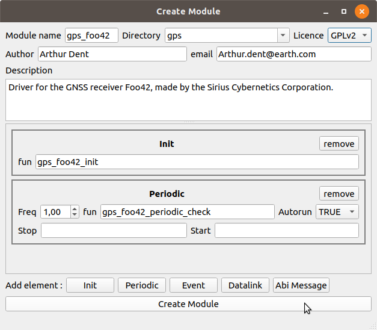

Develop new GPS driver¶
We will see in this tutorial how to develop a driver for a new GNSS receiver.
First, we create a new module. Use the Module Creator tool to ease this step. (In the Paparazzi Center: Tools->Module Creator)
Edit XML file¶
The generated module description file can be found in conf/modules. You have to edit it to fit your needs. Here the file for my module :
<!DOCTYPE module SYSTEM "module.dtd">
<module name="gps_foo42" dir="gps">
<doc>
<description>Driver for the GNSS receiver Foo42, made by the Sirius Cybernetics Corporation.
</description>
</doc>
<autoload name="gps"/>
<header>
<file name="gps_foo42.h"/>
</header>
<init fun="gps_foo42_init()"/>
<periodic fun="gps_foo42_periodic_check()" freq="1.0" autorun="TRUE"/>
<makefile>
<file name="gps_foo42.c"/>
<raw>
ifdef SECONDARY_GPS
ifneq (,$(findstring $(SECONDARY_GPS), foo42))
# this is the secondary GPS
$(TARGET).CFLAGS += -DGPS_SECONDARY_TYPE_H=\"modules/gps/gps_foo42.h\"
$(TARGET).CFLAGS += -DSECONDARY_GPS=GPS_FOO42
else
$(TARGET).CFLAGS += -DGPS_TYPE_H=\"modules/gps/gps_foo42.h\"
$(TARGET).CFLAGS += -DPRIMARY_GPS=GPS_FOO42
endif
else
# plain old single GPS usage
$(TARGET).CFLAGS += -DGPS_TYPE_H=\"modules/gps/gps_foo42.h\"
endif
</raw>
</makefile>
<makefile target="fbw">
<define name="USE_GPS"/>
</makefile>
</module>
This module depend on the gps module. It is automaticaly loaded with <autoload name="gps"/>. You may also want to autoload simulated GPS to simulation sessions. In this case add the following autoloads:
<autoload name="gps_nps"/>
<autoload name="gps_sim"/>
The makefile node can be constrained to specified targets. If you develop a driver for a real sensor, you probably don’t want it to be used in simulation. Add a target attribute to limit the use of your module to real autopilots only:
<makefile target="ap|fbw">
Note
ap and fbw are the autopilot firmware names for real aircrafts.
Edit .h file¶
Define PRIMARY_GPS like in the following code snippet in the .h file: this will automatically define your GPS as PRIMARY if no other is explicitely defined.
#ifndef PRIMARY_GPS
#define PRIMARY_GPS GPS_FOO42
#endif
If you specified an init function in the Module Creator, its prototype should appear here:
extern void gps_foo42_init(void);
You need to declare a struct GpsState to hold GPS information. It can also be wrapped in a custom struct if needed. The _GpsState_ structure must be passed as argument to the gps_periodic_check function. The easy way to do it is to make a macro that wrap this call:
extern struct GpsState gps_foo;
#define gps_foo42_periodic_check() gps_periodic_check(&gps_foo)
Note
If you define this macro, you must then delete the function prototype and implementation that the Module Creator generated for you.
Add an ABI ID for your module¶
In the file sw/airborne/subsystems/abi_sender_ids.h add a free ID for your module in the GPS section (around after line 205) :
#ifndef GPS_FOO42_ID
#define GPS_FOO42_ID 16
#endif
Edit .c file¶
Define the global GpsState structure you declared in the .h file:
struct GpsState gps_foo;
Then initialise it in you init function. You should at least set the fix field (to false, assuming that you will not have a fix at the startup).
Set or Clear the valid_fields bits:
ClearBit(gps_foo.valid_fields, GPS_VALID_POS_ECEF_BIT);
Note
Valid fields are:
GPS_VALID_POS_ECEF_BIT
GPS_VALID_POS_LLA_BIT
GPS_VALID_POS_UTM_BIT
GPS_VALID_VEL_ECEF_BIT
GPS_VALID_VEL_NED_BIT
GPS_VALID_HMSL_BIT
GPS_VALID_COURSE_BIT
Write your driver to get GPS information.
Fill the GpsState structure to the best you can, and set the appropriate valid_fields bits.
Finally, send the GPS ABI message:
AbiSendMsgGPS(GPS_FOO42_ID, now_ts, &gps_foo);
Note
now_ts is the current timestamp defined by uint32_t now_ts = get_sys_time_usec();.
To use your module, just add it to your airframe file in the firmware section: <module name="gps" type="foo42"/>